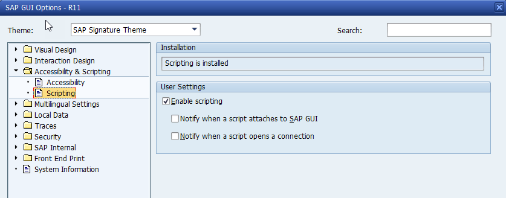
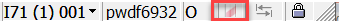
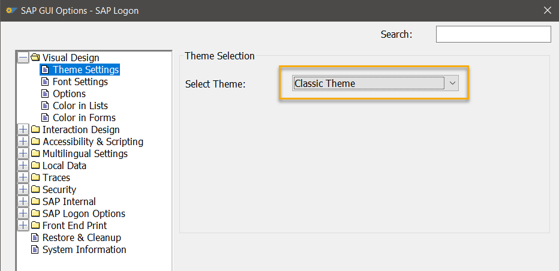

How to Use the Tool?
The user interface is straightforward including following steps:
1. Choose Data Source¶
The input data can be from a live HANA database or from local disk (e.g offline HSIC data)
There are 4 ways to connect to a HANA database (it is possible to use the key shortcuts to choose the method):
1) Custom System via SAP Proxy¶
Key Shortcut: 1
If SAP HANA Database connection is open from the customer side, it is possible to connect to "localhost" after saptcpproxy is started. Please make sure that the port used is matching the saptcpproxy port, the default port is 5000.
2) SAPGUI Connection¶
Key Shortcut: 2
To connect to HANA Database via SAPGUI, following prerequisites should be fulfilled:
- Transaction ST04 -> Diagnostics -> SQL Editor has been started on an SAP system running on HANA. (Not required as of V2.2)
- HANA HotSpots always tries to connect to the last valid SAPGUI session.
-
SAPGUI scripting is enabled in the SAPGUI options as below, it is important to uncheck the two "Notify" sub-options to suppress the annoying warning message.
 -
Following ABAP parameters should be set to the Required Value
| Parameter Name | Default Value | Required Value |
|---|---|---|
sapgui/user_scripting |
FALSE | TRUE |
sapgui/user_scripting_disable_recording |
FALSE | FALSE |
sapgui/user_scripting_force_notification |
FALSE | FALSE |
sapgui/user_scripting_per_user |
FALSE | FALSE |
sapgui/user_scripting_set_readonly |
FALSE | FALSE |
Please check this link for detailed instructions. If the highlighted icon in the SAPGUI status bar  is visible, then it means SAPGUI scripting is allowed. Otherwise please ask the customer for the permission to change them. All these parameters can be changed online.
- The SAP BASIS version should be higher or equal to 7.02 SP16 / 7.30 SP12 / 7.31 SP12 / 7.40 SP07.
- Due to different issues introduced by SAPGUI themes (e.g. Belize), to be on the safe side please use the SAPGUI 'Classic Theme' for best stability.

Warning
Please note that when using SAPGUI connection, the tool needs to access clipboard often, therefore please do not make "copy/paste" operation in parallel as otherwise the conflict may cause the tool to fail.
Tip
- SAPGUI connection is only supported on Windows (including GUI and CMD version).
-
Sometimes the SAPGUI connection is not working as the tool can not find the valid SAPGUI session. This can happen due to various reasons:
- The above mentioned prerequisites are not met -> please correct them accordingly.
- Connecting through Firefighter (
/VIRSA/VFATorGRAC_EAM) -> make sure to close the Firefighter window after the connection to the target system is opened.
If issue persists, please test the WTS to see if the SAPGUI connection can be used.
3) Self Defined System¶
Key Shortcut: 3
Define the Host/Port of any HANA system on the network for direct access.
4) Use hdbuserstore Key¶
Key Shortcut: 4
If key is generated and stored via hdbuserstore, it is also possible to connect to HANA system via the key.
Furthermore, if SSO check box is flagged, the password can be omitted to connect to HANA system via Single-Sign-On. If SSL check box is flagged, the secure connection will be used to connect to HANA system. (e.g. should be used when connecting to HANA Cloud System)
5) Read Local Data (e.g. HSIC data)¶
Key Shortcut: 5
Choose a folder or a zip file from local file system as the data source.
If customer has provided the HSIC (HANA HotSpots Information Collector) data, the report can be generated by this function.
2. Select Function¶
Select a Function to use the tool. Following functions are supported: (Click on the title will jump to the detailed introduction)
Overview Report¶
Quickly check the HANA DB and show the most important load history. This report is much faster and lighter than the "General Report", it is recommended to always first use this report to get an overview before making detailed analysis through the "General Report".
General Report¶
Focusing on important HANA KPIs such as CPU, Memory, Thread Samples, Main Activities, etc. The analysis output would immediately show the HotSpots (i.e. When and what was the most significant bottleneck) of the HANA Database. At the beginning of the report, a summary section is provided to automatically detect the most critical issues (if any) identified on the HANA database.
Top SQL Report¶
Focusing on most expensive SQL statements based on several criteria: Total Elapsed Time, Number of Thread Samples, Average memory consumption, etc. The analysis output would show the overview and detailed information of all these top SQL statements including SQL text, heatmap, KPI history, etc.
Single SQL Report¶
Most important information of one SQL statement is shown: KPI history, all objects accessed, etc.
Comparison Report¶
Show the difference of most important HANA KPIs between two time frame selected. It is especially helpful to identify why HANA database behaviour suddenly changes.
SAP Workload Report¶
Show the KPI on SAP appliation servers. e.g. KPI History from ST03 and /SDF/SMON
3. Select Time Frame¶
The next step is to select the Time Frame of the analysis. The time frame selection is different for different report types:
Tip
Due to the fact that many HANA history information are collected once per hour, normally it makes no sense to select a very short time frame.
A good starting point would be at least 4 hours.
Overview / General / Top SQL / Single SQL Report¶
By default, the analysis is focusing on the last 24 hours.
Info
The HANA server time will be used automatically, therefore do not be surprised if the appearing time is not the same as your local desktop time.
Some shortcuts are provided in the interface so that it is easier to select the "Begin Time" and "End Time" of the analysis.
The combo box beside the Begin Time label can be used to choose the baseline of the begin time:
- End time -> set the Begin Time to be the same as the End Time.
- Current time -> set the Begin Time to the current HANA server time.
- Start of M_SERVICE_THREAD_SAMPLES -> set the Begin Time to the beginning of M_SERVICE_THREAD_SAMPLES, when this is selected, the analysis will focus on the recent thread sample history that has a higher granularity.
- Most recent HANA startup time -> set the Begin Time to the last HANA startup time.
The combo box beside the End Time label can be used to choose the baseline of the end time:
- Begin time -> set the End time to be the same as the Begin Time.
- Current time -> set the End time to the current HANA server time.
"H0" button will set the time to be the midnight of that date. i.e. 00:00
"M0" button will set the minute to zero. e.g. 12:34 -> 12:00
The "+" and "-" button together with the '1H'/'6H'/'1D' radio buttons can be used to quickly change the time by a step of 1 hour, 6 hours and 1 day respectively.
Comparison Report¶
Both Time Frame 1 and Time Frame 2 need to be filled. If the time length of time frame 1 equals the length of time frame 2, the 'Analysis Time Range' label will be shown in green to imply that it is recommended to analyze with same time length for comparison report.
SAP Workload Report¶
Because the retention time is different on each system, therefore the time frame selection is ignored. The tool will use the SAP Workload Report Options to determine which data to collect.
4. Start Analysis¶
After the Function and Timeframe are selected, click the "Start Analysis" button to launch the analysis. Depending on the workload of the system and the timeframe length selected, the analysis time may vary between less than one minute to more than 15 minutes. (Please have some patience : ) )
Folder Prefix¶
The created folder name will be prefixed by the text entered in the 'Folder Prefix' line editor. e.g. If the prefix is set to "Customer_123", the report folder name will be "Customer_123_DBID_SID_GeneralReport_Time".
Note that only letters, numbers and underscore are allowed for the prefix name.
Collect Data Only¶
If checked, only raw data will be collected and no report will be generated.
Tip
This option is useful when dealing with a scale out system with many hosts. First collect all the data and then use "Read Local Data" to generate a tailored report.
Show Result¶
Finally "Show Result" button would open the report in your default browser. The report is a single HTML file located under the working directory with interactive embedded figures to show the HANA Database information. It is possible to zoom in/out and filter different KPIs for better understanding of the system status. Depending on the analysis choice, the report size ranges from a few MB to more than 50 MB.
Also note that it takes a while in the browser for the report to be fully rendered.